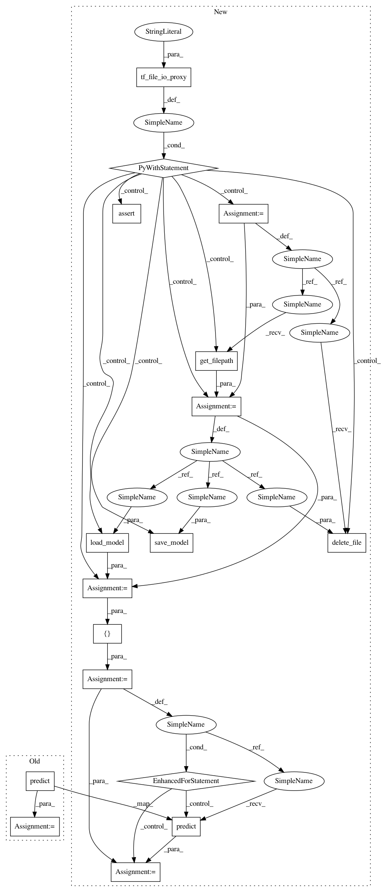

a9cd4bfc8fcc7ed43e092c84415c261d30e9c79f,tests/test_model_saving.py,,test_functional_model_saving,#,88
Before Change
model = load_model(fname)
os.remove(fname)
out2 = model.predict(x)
assert_allclose(out, out2, atol=1e-05)
def test_model_saving_to_pre_created_h5py_file():
After Change
new_model_disk = load_model(fname)
os.remove(fname)
with tf_file_io_proxy("keras.engine.saving.tf_file_io") as file_io_proxy:
gcs_filepath = file_io_proxy.get_filepath(filename=fname)
save_model(model, gcs_filepath)
file_io_proxy.assert_exists(gcs_filepath)
new_model_gcs = load_model(gcs_filepath)
file_io_proxy.delete_file(gcs_filepath) // cleanup
for new_model in [new_model_disk, new_model_gcs]:
new_out = new_model.predict(x)
assert_allclose(out, new_out, atol=1e-05)
def test_model_saving_to_pre_created_h5py_file():
inputs = Input(shape=(3,))
x = Dense(2)(inputs)
outputs = Dense(3)(x)
In pattern: SUPERPATTERN
Frequency: 3
Non-data size: 17
Instances
Project Name: keras-team/keras
Commit Name: a9cd4bfc8fcc7ed43e092c84415c261d30e9c79f
Time: 2018-12-21
Author: andhus@kth.se
File Name: tests/test_model_saving.py
Class Name:
Method Name: test_functional_model_saving
Project Name: keras-team/keras
Commit Name: a9cd4bfc8fcc7ed43e092c84415c261d30e9c79f
Time: 2018-12-21
Author: andhus@kth.se
File Name: tests/test_model_saving.py
Class Name:
Method Name: test_sequential_model_saving_2
Project Name: keras-team/keras
Commit Name: a9cd4bfc8fcc7ed43e092c84415c261d30e9c79f
Time: 2018-12-21
Author: andhus@kth.se
File Name: tests/test_model_saving.py
Class Name:
Method Name: test_sequential_model_saving